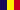
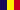

Karst Areas of Romania
Padiş
The Padis Area is a small karst area in the Apuseni Mountains, called Muntii Bihor, located in the heart of the mountains. This area is very remote as there is no good road across this part of the Carpathians. There is only a very bad one lane track with many holes. It does not matter from which side you approach the area, either from Huedin in the east or from Pietroasa in the west, you will have to drive about 30km of very bad road. A 4WD is a good idea, or, if you do not want to drive this yourself, make an arrangement with local guides. They will pick you up with an old jeep.
The area was declared a Natural Park lately, which is primarly an important fact for the development of the area, not for its protection. There is a very comfortable new lodge right in the middle of this area, which is a very good value. Because of the bad accessibility of the area they are happy about every guest and offer a cheap accomodation.
There are no show caves in the area, but numerous caves were local caving club make spelunking tours. Also there are impressive dolines and cave entrances, ponors and springs. So there is a lot to hike above and underground.
 Pestera Cetatile Ponorului
Pestera Cetatile Ponorului Search Google for "Padis Karst"
Search Google for "Padis Karst" Padis
(
Padis
(
 )
)